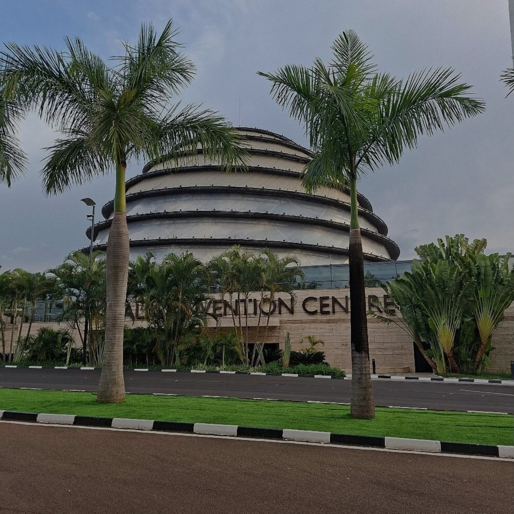

ABOUT RWANDA NZIZA
Technology for cleaner and stronger communities
Rwanda Nziza is a civic reporting website created to help people report infrastructure, environmental and public service problems in Rwanda.
The platform gives users a simple form, a directory of institutions and direct links to official websites. Its goal is to support clear communication and responsible community participation.
Our Vision
A clean, safe and well-connected Rwanda.
Our Mission
Make public problem reporting simple and accessible.
CONTACT
Get in touch with Rwanda Nziza
Kigali, Rwanda
fideleigeno250@gmail.com
+250795248895